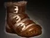
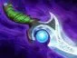
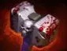

Swashbuckle
Быстро перемещает героя в выбранном направлении и наносит серию ударов по линии. Полезно для урона, фарма и выхода из опасности.

Универсальный герой — позиции: 2, 3, 4
мобильный инициатор, контроль и урон по области
врываться в драки, мешать врагам использовать способности, отвлекать противников и создавать пространство для команды
используй Swashbuckle для зачистки крипов и лагерей. Следи за маной и не трать ультимейт только ради быстрого перемещения, если скоро ожидается драка
Быстро перемещает героя в выбранном направлении и наносит серию ударов по линии. Полезно для урона, фарма и выхода из опасности.
Прыгает и наносит урон врагам вокруг. Помогает врываться в бой и получать защитный эффект в зависимости от числа задетых героев.
Атаки и удары способностей могут ослаблять врагов дополнительным эффектом. Это помогает мешать опасным героям сражаться эффективно.
Превращает героя в катящийся шар, который отталкивает и оглушает врагов при столкновении. Используй в узких проходах или там, где врагам трудно увернуться.




